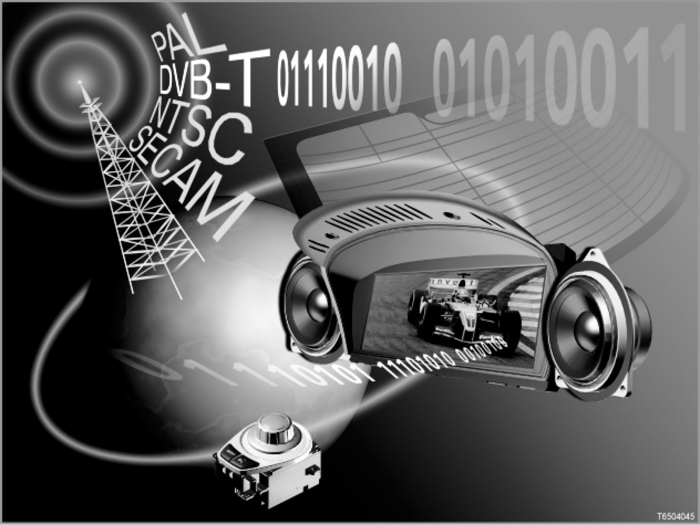

Part 1
65 07 04 (105)
Digital and analogue television
E60/E61/E63/E64/E65/E66/E70/E71/E83/E85/E86/E90/E91/E92/E93

Note: Television picture in front is inactive while the vehicle is being driven.
For safety reasons television is forbidden in the front when the vehicle is in motion. For this reason, the TV picture is faded out at roadspeeds greater than 3 km/h. However, TV sound remains audible.
Introduction
The television can be ordered as special equipment (option 601 or 602). Either the Control Display (only E65, E66) or the Central Information Display are used as the TV screen.
TV reception in the rear:
> - E65, E66
With option 603, "Rear monitor", it is possible to use the television in the rear seat area too.
> - E70, E71
From 09/07, TV reception is also possible in the rear in conjunction with option 6FF "DVD system in rear" and option 601 "TV function" or option 602 "on-board monitor with TV". Here, a headphones module and a special RSE control unit are used.
New feature: The newly developed video modules receive both analogue and digital television in accordance with the international standard DVB-T. The abbreviation "DVB-T" stands for "Digital Video Broadcasting - Terrestrial.
Depending on the series there are the following equipment versions for analogue and digital television:
- Front television:
Viewing television in the front is only possible when the vehicle is stationary.
> - E60, E61, E63, E64 - Television in front:
> - E65, E66: Television in front:
> - E70, E71: Television in front:
[System overview]
> - E83, E85, E86
> - E90, E91, E92, E93
- Television in the front and rear is only available for model series E65, E66, E70, E71.
When the vehicle is in motion it is only possible to watch television in the rear seat area. It is only possible to watch television in the front when the vehicle is stationary.
- E65, E66: Front and rear seat television
- E70, E71: Front and rear seat television
Note: The Japan national version has its own system overview.
There is a separate television system overview for the Japan national version. Please refer to the "National version" section.
Brief description of components
The following components supply signals or data for the television:
- TV aerial
The TV aerial receive the signals for the television.
2 or 3 TV aerials are used as follows for the best possible TV reception under varying reception conditions:
> - E60, E61, E63, E64 - Front television: 2 TV aerials
> - E65, E66 without navigation system: Front television: 3 TV aerials
> - E65, E66: Television in front and rear, analogue: 2 TV aerials
> - E65, E66: Front and rear seat television: 3 TV aerials
> - E70, E71: Front television: 2 TV aerials
> - E70, E71: Front and rear seat television: 3 TV aerials
> - E83, E85, E86: TV in front: 2 TV aerials
> - E90, E91, E92, E93: TV in front: 2 TV aerials
- TV aerial amplifier
There are always 2 TV aerial amplifiers (TV tuners) installed.
The aerial signals are transmitted to the video module via coaxial cables.
> E65, E66
On equipment versions with 3 TV aerials, 2 TV aerials are amplified by one TV aerial amplifier. One more TV aerial is amplified by the 2nd TV aerial amplifier.
> E70, E71
On the equipment version with 3 TV aerials, there are 3 TV aerial amplifiers installed.
- MOST port
Control units for the television are programmed and encoded via the MOST port.
- Diagnosis lead
Control units for the television are diagnosed via the diagnosis lead.
- Diagnosis-on CAN (D-CAN)
D-CAN supersedes the previous diagnosis interface in all countries. The background for the conversion is a new legal requirement in the USA that stipulates that all vehicles from Model Year 2008 must be equipped with D-CAN.
[For further information, please refer to SI Technology (SBT) 61 03 05 144] Bus Structures
The following control units are involved in the television system (in alphabetical order):
- AMP: Amplifier
The amplifier issues the audio signals to the loudspeakers.
The following amplifier is fitted, depending on equipment variant:
- Hi-Fi amplifier without AMP control unit
- TOP Hi-Fi amplifier with AMP control unit:
This amplifier belongs to the "TOP Hi-Fi amplifier" option (Logic 7).
The TOP Hi-Fi amplifier is a control unit in the MOST network.
The audio signals are transmitted to the TOP Hi-Fi amplifier via the MOST bus.
- ASK: Audio system controller
> E65, E66
The audio system controller controls the sound.
The audio system controller is a control unit in the MOST network.
- BZMF: Rear compartment center armrest control center
> E65, E66
The rear compartment center armrest control center controls the headphones.
The center armrest control panel in the rear is a control unit on the K-CAN SYSTEM
- CCC: Car Communication Computer
> E60, E61, E63, E64, E70, E71, E90, E91, E92, E93
The Car Communication Computer controls the information and communication systems.
Depending on the equipment and national version, the Car Communication Computer processes RGB signals or FBAS signals (RGB: red-green-blue; FBAS: Composite Video Burst Synchronization).
The Car Communication Computer converts the analogue picture signals into digital LVDS signals (LVDS: Low Voltage Differential Signalling). The LVDS signals are transmitted to the screen via a special LVDS data wire (monitor is the CD or the CID).
The Car Communication Computer is a control unit in the MOST network.
[for more information, please refer to SI Technology bulletin (SBT) 84 06 03 053]
- CD: Control display
> E65, E66
The control display is the screen for the television and other information and communication systems (e.g. navigation system).
The Control Display is a control unit in the MOST network.
- CID: Central Information Display
> E60, E61, E63, E64, E70, E71, E83, E85, E86, E90, E91, E92, E93
The Central Information Display is the screen for the television and other information and communication systems (e.g. for the navigation system).
The Central Information Display is a control unit on the K-CAN.
[for more information, please refer to SI Technology bulletin (SBT) 62 01 03 027]
- CON: Controller
> E60, E61, E63, E64, E65, E66, E70, E71, E90, E91, E92, E93
The controller is the operating unit and the control unit for operating the screen (control display or Central Information Display, see below).
The controller is a control unit on the K-CAN SYSTEM or K-CAN
(K-CAN-S on E65, E66; K-CAN on E60, E61, E63, E64, E70, E71, E90, E91, E92, E93).
[for more information, please refer to SI Technology bulletin (SBT) 62 01 03 027]
- DSC: Dynamic Stability Control
Fading out the TV picture in the front while the vehicle is being driven requires the speed signal to be evaluated. The wheel-speed signals are transmitted by the DSC control unit on the powertrain CAN (PT-CAN). The instrument cluster (KOMBI) prepares the speed signal and makes it available as a message on the K-CAN or K-bus.
- DVD-C: DVD changer
The films on DVD use the components and software of the television.
- FCON: Rear controller
> E65, E66
The rear compartment controller is part of option 603 "Rear monitor".
The rear compartment controller is integrated into the rear compartment center armrest control center (BZMF).
The rear compartment controller is the operating unit and control unit for operating the rear display. The rear compartment controller is a control unit on the K-CAN system
- KHI: Headphones interface
> E65, E66
The headphones interface is part of option 603 "Rear monitor".
The headphones interface transmits audio data to the headphones connection module.
The headphones interface is a control unit in the MOST network.
- KHM: Headphones module
> E70, E71
The headphones module is the interface between the MOST bus and the control unit for the RSE (rear entertainment system).
While the image signals from the video module are directly transmitted to the RSE control units via an RGB wire, the video module transmits the TV sound as a message (optical signal) on the MOST bus.
The headphones module converts the optical signal into an analogue signal.
The headphones module transmits the TV sound to the RSE control unit as an analogue signal through the audio wires. The RSE control unit regulates the audio output of the TV sound for the rear entertainment system.
- NAV: Navigation system
> E65, E66
The navigation system is important for the equipment version "TV in front".
With the equipment variant "Television in front", the NAV control unit works as an RGB decoder:
The navigation system converts FBAS signals into RGB signals.
The navigation system is a control unit in the MOST network.
> E60, E61, E63, E64, E70, E71, E90, E91, E92, E93
The navigation system has been integrated in the Car Communication Computer (CCC). This means that there is only a separate navigation system for certain national versions.
- SG-FD: Rear display control unit
> E65, E66
The rear compartment controller control unit is only provided with option 603 "Rear monitor".
The SG-FD is installed beneath the rear display.
The SG-FD is a control unit on the K-CAN system
The SG-FD converts the image signal into the screen display on the rear display: e.g. RGB signals into LVDS signals.
The SG-FD is actuated by the video module.
Signal path: VM -> RGB wire -> SG-FD -> LVDS data wire -> FD
- SGM: Safety and gateway module
> - E65, E66
The safety and gateway module is the data interface between the K-CAN (K-CAN Periphery and K-CAN SYSTEM), the diagnosis wire, byteflight and PT-CAN.
The control units are diagnosed via the SGM.
> - E60, E61, E63, E64
- Until 09/05: SGM
- from 09/05: Body gateway module (KGM)
- VM: Video module
Depending on the national version concerned, either the hybrid video module or the video module 5 (VM5) is fitted.
The video module is the central receiver unit for the picture signals from the TV aerials. In addition, the video module is a selector switch for the video sources.
- The video module is the master control unit for the television.
- The video module edits the picture signals from the TV aerials and from the DVD drive or DVD changer.
The video module is a control unit in the MOST network.
>E83, E85, E86
The following components are controlled:
- Monitors: Central Information Display or Control Display
> - E60, E61, E63, E64, E70, E71, E83, E85, E86, E90, E91, E92, E93: Central Information Display (CID)
> - E65, E66: Control display (CD)
- FD: Rear display
> E65, E66, E70, E71
The rear display is the monitor for the television in the rear.
The rear display is mounted on the center console between the driver's and front passenger's seats.
> - E65, E66
The rear display is part of option 603 "Rear monitor".
The rear display is actuated via an LVDS data wire by the rear display control unit (SG-FD). The rear display is a control unit on the K-CAN system
> - E70, E71
The rear display is part of option 6FF "Rear seat entertainment".
The rear display is actuated via an LVDS data wire by the RSE control unit (RSE = "Rear Seat Entertainment"). The rear display is a control unit on the K-CAN.
- Loudspeakers
The following loudspeakers are actuated for audio output:
- Tweeters and medium-range loudspeakers: The loudspeakers are actuated by the CCC, the ASK or the radio.
> E60, E61, E63, E64, E70, E71, E90, E91, E92, E93: Car Communication Computer (CCC)
> E65, E66: Audio system controller (ASK)
> E83, E85, E86: BMW CD radio or BMW Business CD radio
- Woofers: If an amplifier (AMP) is fitted (Hi-Fi amplifier or TOP Hi-Fi amplifier), the woofers are actuated by the amplifier.
- Headphones connector module
> E65, E66:
The headphones connector module is integrated into the rear compartment center armrest control center.
The headphones are connected to the headphones connector module.
The following wires are important:
- FBAS wire
FBAS: Farbbild-Austast-Synchronsignal,
English CVBS: Composite Video Burst Synchronization
The FBAS wire consists of 2 wires:
- One wire is used to transmit all three 3 RGB signals (red-green-blue) together.
The synchronization pulse (for a sharp TV picture) are also transmitted on the wire for RGB signals.
- The other wire is used for screening and earthing.
- Coaxial cable
The coaxial cables transmit high-frequency signals, e.g. between the TV aerial amplifier and the video module (VM):
Construction of coaxial cable:
- Inner conductor ("core"), insulated
- The outer conductor forms a mantle around the inner conductor
- LVDS data wire
LVDS stands for "Low Voltage Differential Signalling".
There is always an LVDS data wire between the control unit for the display and the screen (except E83, E85, E86):
LVDS is a special technology for fast and secure data transmission:
There are 2 wires for each signal. The signal is transmitted positively on one wire, negatively on the other (inverted). This means that each pair of wires is electrically neutral.
Interference from outside has no effect on the signal transmission: such interference affects both wires equally. The signal information is thus unaffected. This is because: The control unit processes the difference between the positive and negative signals. This difference remains unchanged even in the event of interference from outside.
The LVDS data wire for the television consists of the following wires:
- 2 wires for red
- 2 wires for green
- 2 wires for blue
- 2 earth wires
- Screening
The synchronized pulses are transmitted on the wire for image signals.
- RGB wire
The RGB wire has 3 wires for image signals: red-green-blue. The synchronized pulse is transmitted on the wire for the green signal.
The RGB wire is screened. The screening carries no current.
In addition, the RGB wire has its own earth wire for improved electromagnetic compatibility. The earth wire conducts current.
- MOST bus
The MOST bus connects the control units for the vehicle's information and communication systems. These control units are programmed via the MOST port.
> E83, E85, E86: no MOST bus fitted.
- K-bus: Body bus
>E83, E85, E86
The K-bus links a series of control units whose functions are in the area of the body and in the information and communication systems of the vehicle.
- K-CAN or K-CAN SYSTEM: Body CAN or body CAN SYSTEM:
> E60, E61, E63, E64, E70, E71, E90, E91, E92, E93: K-CAN
> E65, E66: K CAN SYSTEM
[for more information, please refer to SI Technology bulletin (SBT) 61 02 03 015]